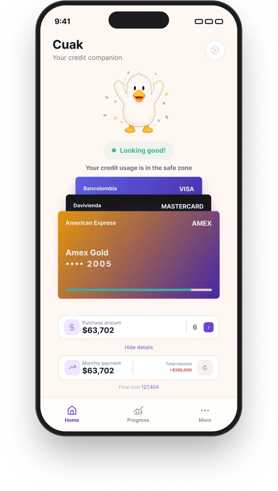
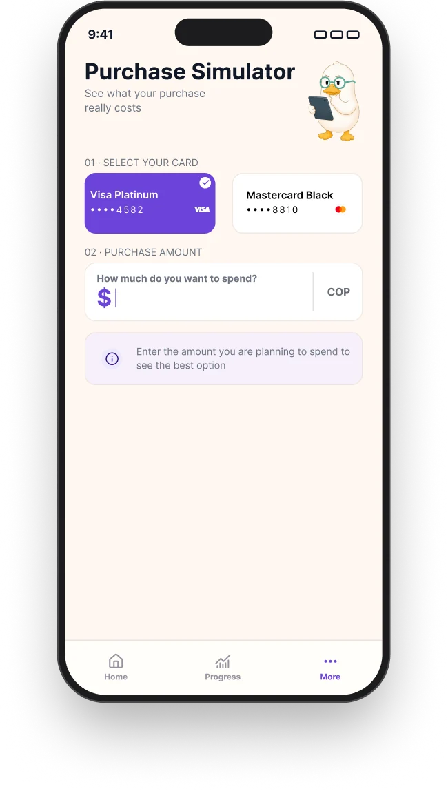
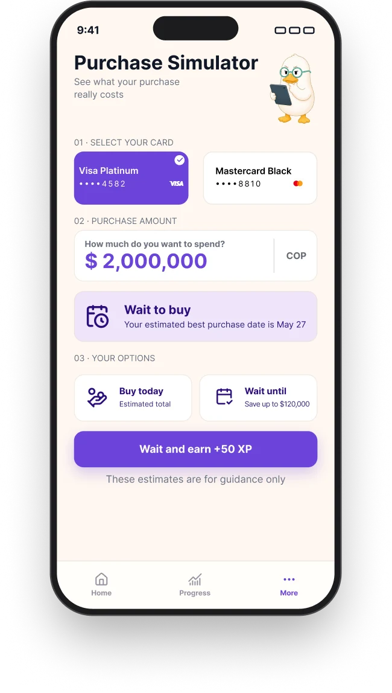

Pipeline
One state change, six layers
Cuak's home screen says Looking good while your credit usage is inside the safe zone, and the duck celebrates. When a purchase would take you out of it, the same duck puts the party down and picks up a megaphone. That one change is the whole job — and it takes six different kinds of work to land. This page takes it through all six.
Each layer makes the state legible in a different way
A state is not a picture and it is not a feature. It is a claim about what a person is living through right now, and a claim has to survive being translated — into a rule, a screen, a body, a movement, a sound, and finally into eight seconds somebody can watch. Most teams split these six across three or four people. I do the chain.
- 01 The state The rule that fires it Product
- 02 On screen Where it is readable UI
- 03 A body The form that carries it 3D
- 04 The change The frames in between Motion
- 05 The landing What you hear it do Sound
- 06 In context The loop, end to end Video
Published In production
A state is a trigger, a mechanism and an action
Before anything is drawn, the state has to exist as a rule. ESA — the framework behind both of my case studies — says every state owes three answers: what fires it, what psychological mechanism it uses, and what the person is now invited to do. A state that cannot answer the third one is decoration.
This is the one I am tracing. It matters because of when it fires: it fires on a purchase the user has only simulated, not one they have made. A warning you can still act on is help; the same warning one day later is just a receipt.
Looking good → Flagging
- Trigger
- A simulated purchase would take credit usage out of the safe zone — the same zone the home screen is reporting on when it says Looking good.
- Mechanism
- Loss aversion, used early, and then immediately defused. The cost is made visible while the decision is still open, so the feeling attaches to the choice instead of to the consequence.
- Action invited
- Wait. The product names a better date, puts a figure on what waiting saves, and pays XP for taking it — so the way out is a reward, not a scolding.
- Why a character, not a red number
- A number that turns red is a report. A character that speaks up is an interruption, and only an interruption arrives in time to change a decision that has not been made yet.
- What it must not do
- Punish. A character that reads as disappointed in you produces avoidance — the user stops opening the app, which is the one outcome that makes the problem worse. That is why this moment uses the duck's voice and not its sadness.
The state needs a place it can be read from
Two screens carry this between them, and they do different jobs. Home is where the state is read: the duck and its verdict come first, the cards and the figures after. The simulator is where the state can be changed — it is the way out, offered before the money moves.

That ordering is the whole 60/40 bet: state above data. It also sets the problem this page is tracing — if the duck is what you read first, then the duck is what has to change when the answer changes.


The state also has to survive being small. On home the duck is a fraction of the size it is here, which sets a hard constraint on the layer below: whatever body this state gets, it has to stay identifiable at 48 pixels.
The missing half of the transition. Home exists in the Looking good state only, so right now this page can show where the change starts but not where it lands on a real screen. Same layout, flagged verdict, the duck swapped for the megaphone state.
assets/img/cuak/screen-home-flagged.webp— 650 × 1148, matching the other seven exports
Worth doing before anything in layers 04–06: it is the cheapest artifact on this list and it is the one the whole page is about.
Five states have to stay one character
The hard part of a character system is not getting one pose right. It is getting five that are unmistakably the same animal, each legible at a glance, each tied to a threshold in the data rather than to a mood I happened to like. Same silhouette, same beak, same volume — only the posture and the face carry the state.


The warning has two volumes, which is a system decision rather than a drawing one. This state carries a purple megaphone; a second state carries a red one with the hand raised, for a threshold that is no longer a suggestion. Two steps mean the loud one still means something — a system with a single alarm teaches people to ignore it.
Keeping a character consistent across states is a spec problem before it is an art problem, so the spec came first. The turnaround below is the reference every state gets checked against: if a pose breaks the silhouette, the pose is wrong — not the reference.


How these were made
These are concept renders, generated with AI, then selected and corrected against the spec above. What that bought was volume, lighting and five usable states in days instead of weeks — which is the only reason the system got playtested at all.
What it cannot buy is geometry. There is no mesh under these images, so there is nothing to interpolate between. That is a real limit, not a cosmetic one, and it is exactly where the next layer starts.
Upgrades this layer from "concept, corrected" to "modelled, rigged, posed". One mesh, one rig; the five states come from shape keys and pose, not from five separate models.
assets/img/cuak/model-viewport.webp— 1600 × 1000, solid shadingassets/img/cuak/model-wireframe.webp— 1600 × 1000, topology visibleassets/img/cuak/model-shapekeys.webp— 1600 × 600, the state sliders
The states are the end points. The design is in between
Two renders tell you where the character starts and where it ends. They say nothing about what the user actually experiences, which is the half second in the middle — and that half second decides the whole bet. The megaphone arriving fast reads as an alarm. The confetti falling first, the arms coming down, and only then the megaphone coming up, reads as someone catching your arm.
This layer also audits the one above it. Motion is a consistency test that stills always pass: put two images on screen in sequence and any drift in the beak, the proportions or the volume becomes the only thing anyone can see.
Needs the model from layer 03. Ease out on the weight shift, ease in on the face, so the body moves before the expression does.
assets/video/cuak-transition.webm— 1080 × 1080, ~1.2 s, VP9, muted, under 800 KBassets/video/cuak-transition.mp4— same, H.264, for Safariassets/img/cuak/cuak-transition-poster.webp— 1080 × 1080, first frame
Small and muted, so it can live in git and autoplay on loop. Needs a pause control and a poster fallback for reduced motion.
Proves the body exists in three dimensions, which two stills never can. The cheapest piece of evidence available once the model is done.
assets/video/cuak-turntable.webm— 900 × 900, 4 s seamless loop, under 600 KBassets/img/cuak/cuak-turntable-poster.webp— 900 × 900
A state that makes no sound arrives half-way
Sound is where the state stops being something you watch and becomes something that happened to you. The flagging state needs a cue with no sting in it — closer to a held breath than to an error tone, because the screen is already carrying the bad news and the audio's only job is to mark the moment it landed.
Worth being plain about the medium: browsers block audio from starting on its own, so an ambient loop on a web page is heard by nobody. Sound only pays off where somebody presses play — which is why it is specced here against the clip in layer 06, and not against the loop in layer 04.
One cue, designed against the transition's timing: the body settles, then the cue marks it. Mixed quiet enough to sit under a voice.
assets/audio/cue-flagging.mp3— ~0.6 s, mono, −18 LUFS, under 20 KBassets/audio/cue-clear.mp3— ~0.4 s, the way backassets/img/cuak/cue-waveform.webp— 1200 × 300, both cues against the transition's frames
The waveform still is what makes this layer readable with the sound off — which is how most people will read it.
Six layers, eight seconds
The last layer is the only one a stranger will actually watch, and it has to carry the five below it without explaining any of them: a hand types an amount, the number turns, the duck settles back, the cue lands, and a way out is offered. If the chain works, nobody watching it needs this page.
Click to play, with audio and controls. This is the one piece where the sound design is actually heard, so it is the one that justifies layer 05.
cuak-simulator.mp4— 1920 × 1080, 8 s, H.264 + AACcuak-simulator-poster.webp— 1920 × 1080, a frame mid-transition
Host this one off the repo. At 1080p with audio it runs several megabytes, and git keeps every version forever — .git is already 192 MB because of images deleted from the working tree two designs ago.
The same chain, applied end to end
This page takes one state apart. The case studies show what happens when a whole product is built out of them — four-state machines, progression tiers, and fail states designed as part of the loop instead of the end of it.